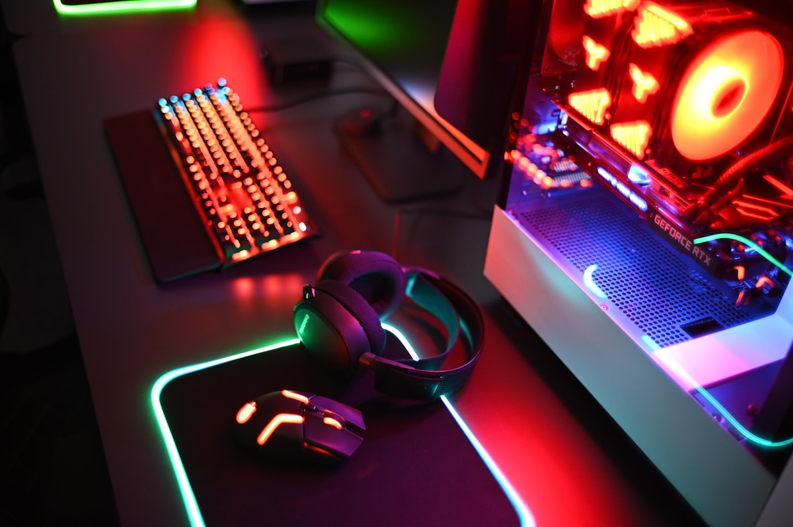

Setup Gamer
Montagem Personalizada
Montamos PCs gamers sob medida, selecionando os melhores componentes para desempenho máximo em jogos e streaming.
Otimização de Performance
Configuramos sistemas, drivers e overclock para garantir velocidade, estabilidade e baixa latência.
Design e Iluminação
Setups visualmente impressionantes com iluminação RGB e organização de cabos profissional.
Suporte Pós-Montagem
Manutenção, upgrades e suporte remoto para manter o equipamento sempre no topo.